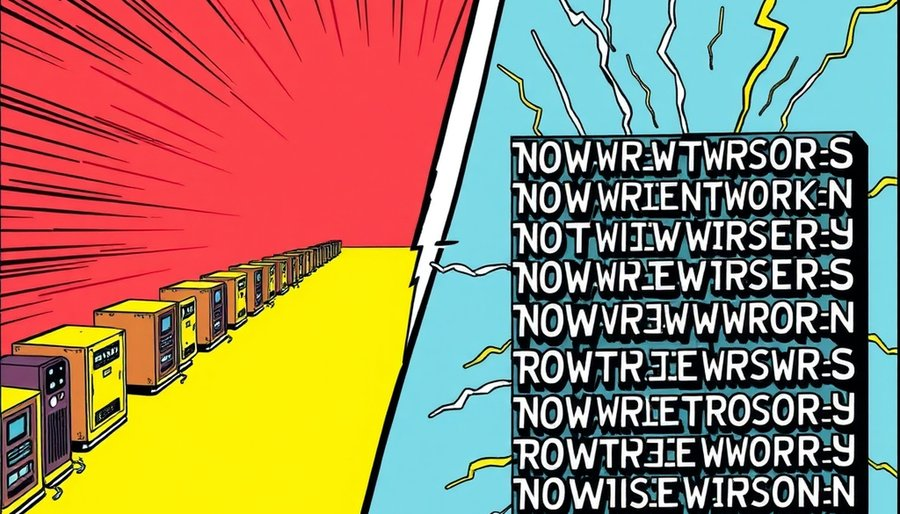
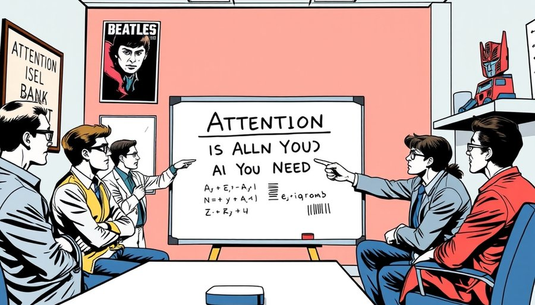

2017年之前，深度学习处理语言的主流方案是循环神经网络。它像人读书一样从左到右逐字处理，每一步都依赖前一步的结果。为了让这种串行模型记住更长的上下文，研究者发明了LSTM、GRU，加上了精巧的门控机制。模型越来越复杂，但长句子的效果依然勉强。机器翻译尤其痛苦，句子一长，主语和宾语经常丢失。
谷歌大脑的八位作者没有沿着这条路继续加零件。据作者之一Llion Jones回忆，他们最初只是尝试简化模型。先拿掉卷积层，训练速度立刻加快，翻译质量持平。这给了他们信心继续剥。再拿掉循环层，模型还是没崩。当整个序列建模只剩下自注意力，训练速度提升了几个量级，翻译质量却全面反超当时最好的系统。自注意力让每个词直接看到所有其他词，不再需要循环结构来传递信息。
这个结果推翻了领域里一个默认假设：序列建模必须尊重时序。Transformer赌的是，顺序可以被降级成一种可学习的位置编码，而依赖距离这个困扰循环网络多年的痛点，可以用一步直达的注意力彻底抹平。赌赢了。
这篇论文起初只是为改进机器翻译，结果它不仅击穿了当时所有翻译基线，还成了后来一切大模型的底层骨架。GPT是它，BERT是它，AlphaFold 2预测蛋白质是它，Sora生成视频也是它。

循环神经网络的设计直觉很自然：语言有时序，模型就该逐字处理。但这个直觉恰恰与硬件为敌。GPU有几千个并行核心，但RNN每一步都依赖上一步，这些核心只能干等着。序列多长，就得串行多少次，算力利用率被锁死在很低的水平。LSTM那些精巧的门控，本质上是在修补串行带来的梯度衰减，越补越复杂，越复杂越难并行。复杂本身成了新的瓶颈。
自注意力换了一套完全不同的逻辑。它把整个句子一次性塞进矩阵乘法，任意两个词之间只隔一步计算。RNN像一条单行道，车必须一辆接一辆通过；Transformer像一座立交桥，所有车同时从不同方向直达目的地。RNN处理一个一千个词的句子，第一个词的信息要经过一千步才能传到最后一个词，每一步都有衰减风险。Transformer里，第一个词直接看见最后一个词，路径长度只有一步。矩阵乘法天然贴合GPU的并行核心，算力被充分释放。位置信息不再靠处理顺序来传递。团队用正弦和余弦函数生成一组位置编码，直接加到词向量上。几十行三角函数，替代了曾经必须由循环结构承担的顺序职责。
整栋架构只剩两种积木：多头自注意力和前馈网络，每层外面裹一层残差连接和归一化。编码器六层，解码器六层，仅此而已。复杂度没有消失，它被重新分配了。从人的调参难度，转移到了机器的并行算力。后者正是那几年唯一在指数增长的东西。
一个自然的质疑是：后来的大模型并不简单。GPT-3有一千七百五十亿参数，层数堆到九十六层，各种训练技巧、稀疏注意力、混合专家模型层出不穷。这不又是在做加法吗？
区别在于骨架。Transformer之前的加法，是在一个串行骨架上不断打补丁。门控、残差、注意力辅助，都是为了让一个天生不适合并行的结构勉强运转。而Transformer之后的加法，是在一个并行骨架上扩展能力。多头注意力可以增加头数，前馈网络可以扩宽，层数可以加深，但任意两词之间仍然一步直达，GPU仍然可以高效并行。这种复杂是健康的，因为它没有重新引入结构性的效率瓶颈。
有人会说，Transformer的成功只是因为赶上了算力爆发的时代。但即使在相同的硬件条件下，它的并行结构也让训练时间从几周缩短到几小时，这是结构效率的胜利，不是单纯堆卡的结果。
还有一个更根本的边界。Transformer的减法之所以有效，是因为它切中了序列建模与硬件之间最核心的矛盾：顺序依赖。如果换一个领域，核心矛盾可能是别的，删减的对象也会不同。简化的力量，来自识别出那个可以被更优机制替代的旧假设。删东西只是结果。当旧假设被替换，曾经需要复杂机制才能维持的能力，会变成新骨架的副产品。
当然，Transformer并非没有代价。自注意力的计算复杂度是O(N²)，序列极长时内存消耗巨大。但这反而催生了新的简化方向，比如稀疏注意力、线性注意力，继续在减法的路上走。简化不是一劳永逸的。它要求不断识别当下最核心的矛盾，然后再次下刀。
这种骨架的通用性很快溢出文本。2020年，视觉Transformer把图像切成小块直接喂给自注意力，在图像分类上击败了卷积神经网络。蛋白质结构预测、音频生成、视频生成，逐一被这个简单架构渗透。它证明了一件事：解决核心矛盾之后，通用性会自然溢出。

Transformer论文真正深刻的地方，是它暴露了领域里一种集体惯性：复杂长期被误当成聪明的同义词。RNN、LSTM那一整套精巧部件，是无数研究者智力贡献的沉淀。它们被供奉多年，并非因为被证明是最优解。删掉它们，等于否定这些贡献，这需要一点反叛的勇气。
论文标题本身就是这种勇气的注脚。严谨沉闷的学术圈里，突然冒出一句《Attention Is All You Need》，语感直接取自披头士的《All You Need Is Love》。作者之一Llion Jones回忆，当发现光靠注意力就够了时，这句带摇滚劲儿的断言就诞生了。Transformer这个架构名同样有极客彩蛋，早期文档首页贴着变形金刚动漫插图，团队自嘲Team Transformer。
这种越简单越通用的逆直觉，在技术史上一再重演。哥白尼用更简单的日心模型替代本轮套本轮的地心体系，爱因斯坦的相对论公式比之前的以太理论更凝练。范式革命最锋利的形态，是剥光冗余。增加解释只能修补旧范式，剥光冗余才能换一个新骨架。
七年后再看，这篇论文的八位作者已陆续离开谷歌，分别成了OpenAI、Anthropic、Cohere、Character.AI、Sakana AI等独角兽的核心成员或创始人，散入万亿美元AI产业的内核。那句All You Need也从技术断言变成了一个时代的注脚。模仿潮随之而来，《Spatial Is All You Need》《Prompt Is All You Need》《Data Is All You Need》纷纷出现，连命名都成了模板。
尾声
Transformer之后，又有人试图用类似的方式简化视觉模型、简化推荐系统。但识别哪个旧假设可以被替换，永远需要一点赌性。
小汪老师的成长观察笔记